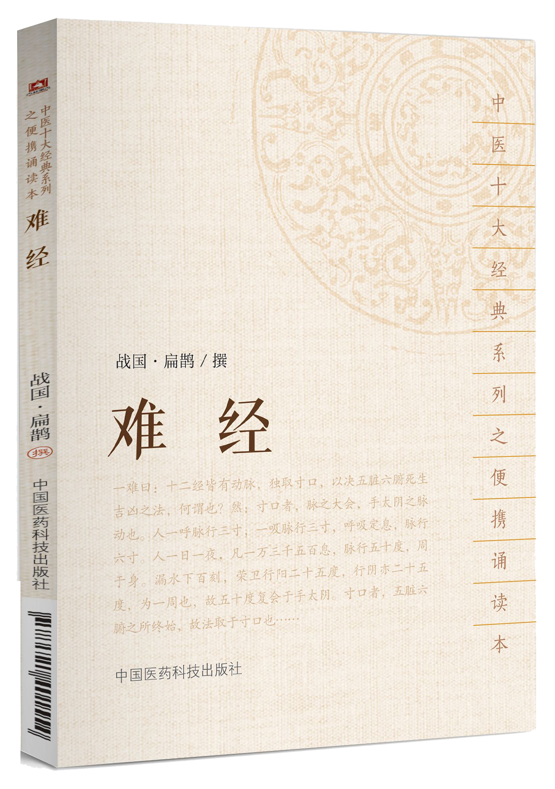

01
作者
扁鹊（公元前五世纪）
02
归属类别
中医学类书籍
03
别名
《八十一难》
04
影响评价
中医经典著作
| 书籍简介
《难经》原名《黄帝八十一难经》，又称《八十一难》，是中医现存较早的经典著作。关于《难经》的作者与成书年代历来有不同的看法，一般认为其成书不晚于东汉，内容可能与秦越人（扁鹊）有一定关系。《难经》之“难”字，有“问难”或“疑难”之义。全书共八十一难，采用问答方式，探讨和论述了中医的一些理论问题，内容包括脉诊、经络、脏腑、阴阳、病因、病机、营卫、腧穴、针刺、病证等方面。北宋初期，王九思、王鼎象、王惟一曾先后校勘《难经》，其中翰林院医官王惟一校勘的《难经》是在吕注本和杨注本的基础上完成的，曾刊印颁行。南宋时，李元立以秦越人原撰为基础，汇集整理南宋以前9家校注《难经》的著作，编撰《难经十家补注》。后人据此书重刻改订，编成《王翰林集注八十一难经》，简称《难经集注》，为后世通行本。